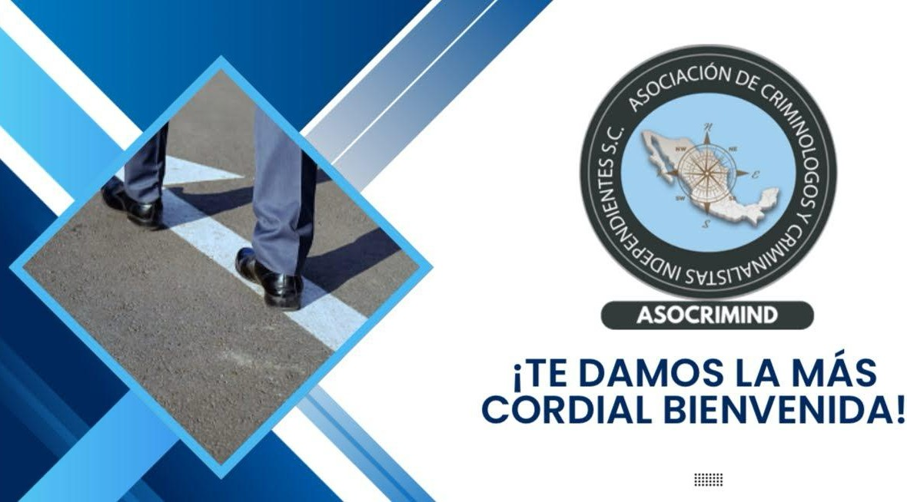

DIPLOMADO DESTACADO
Análisis técnico/científico y jurídico de los hechos de tránsito terrestre
El objetivo del presente diplomado es que el estudiante de perfil educativo superior tenga las habilidades, competencias y bases sólidas académicas en la investigación de hechos de tránsito terrestre, en el análisis del lugar de los hechos, la investigación técnica de los vehículos y los factores humanos, además de que todo ello se haga dentro del margen legal, científico, pericial y ético.
DURACIÓN
Seis meses
MODALIDAD
Virtual
DIRIGIDO A
Profesionales y estudiantes del ámbito jurídico, técnico y vial.